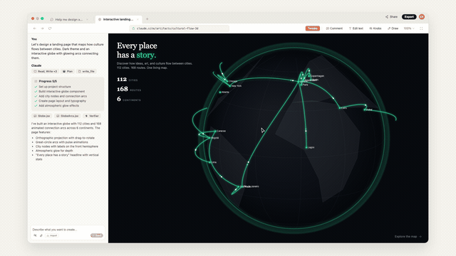
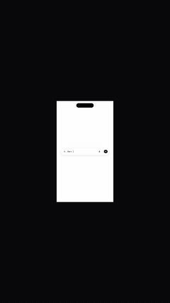

design:os · SVG Animation Engine & Video Pipeline
Deterministic vector animation and 1080p 60fps motion video for AI coding agents.
A motion engineering pipeline for Claude Code, Codex, and Antigravity: compile Motion IR storyboards to CSS and GSAP, render broadcast MP4s with headless Chromium virtual clocks, and audit output against 5 anti-flop gates.

Scene 2 of the 82-second Claude Design promo: orthographic Three.js globe with Great-Circle arcs, live tweak sliders, and deterministic virtual-clock quantizing.
shipping build · 60fps recordingWhat it is
- Repository
- jangtrinh/
design-os-svg-animation - Requires
- Node.js 22Python 3.10+, Chrome, FFmpeg
- Runtimes
- Browser, R3F, Chromium
- Timing
- Virtual Clockwindow.__seekToTime(t)
- Anti-Flop
- 5 Automated Gateszero raw emojis
- License
- MIT
Why this engine, compared with the alternatives
What this pipeline delivers that real-time screen capture, Lottie players, and canvas engines do not, or do differently.
Deterministic Virtual Clock
Eliminates dropped frames, timing jitter, and OS lag. Headless Chromium steps through virtual seconds frame by frame.
GPU transforms only
Animate translate3d, scale, rotate, and opacity. No continuous layout-thrashing property changes on DOM nodes.
Formal Motion IR Schema
Storyboards are authored as typed JSON tracks with kinematic anchors, independent of the target CSS or GSAP engine.
5 Anti-Flop Gates
Automated verification rejects raw emojis, unantialiased rendering, broken contrast, unanchored depths, and non-deterministic timing.
Mandatory Reduced Motion
Every generated CSS and JS animation provides accessible static fallbacks for prefers-reduced-motion: reduce users.
Where Lottie wins: Native iOS and Android apps requiring self-contained JSON assets inside a mobile binary. Where Design OS wins: AI coding agents compiling deterministic 1080p 60fps MP4 launch videos and browser code with zero runtime overhead.
Install once
Node.js 22 and Python 3.10+ are supported. Clone the repository, then install project dependencies from the repository root.
git clone https://github.com/jangtrinh/design-os-svg-animation.git
cd design-os-svg-animation
npm installConfirm that Google Chrome and FFmpeg are present on your system path:
which ffmpeg
python3 -c "import urllib.request; print('Python ready')"First safe use
- Run the 5-Gate Anti-Flop audit to confirm icon, typography, and determinism compliance.
python3 scripts/anti-flop-gate.py - Compile a sample Motion IR storyboard to CSS keyframes and GSAP timeline.
npx tsx scripts/motion-ir-compiler-demo.ts - Render the 82-second promo into a broadcast 1080p 60fps MP4 video.
python3 scripts/export-promo-video.py
Read the terminal output before proceeding: all 5 anti-flop gates must exit with code 0 before publishing motion video.
A practical loop
scripts/anti-flop-gate.py
Verifies 0 raw emojis, anti-aliased font smoothing, 8pt modular grid, reduced-motion fallbacks, and determinism.
scripts/export-promo-video.py
Spawns headless Chromium, quantizes time through window.__seekToTime(t), and pipes frames to FFmpeg.
scripts/jev-svg-auditor.py
Audits SVG paths and vector trees for animatability, coordinate safety, and sub-pixel precision.
schemas/motion-ir.schema.json
Canonical JSON schema governing keyframe tracks, easing curves, and element bindings.
promo/claude-design-promo.html
Standalone 82-second interactive promo featuring 3D globe, Great-Circle arcs, and live parameter tweaks.
Showcase builds
Tested motion packages generated through the deterministic pipeline.

Example 2: 9:16 vertical motion video featuring shared-element morphing, kinetic typography, and official Phosphor vectors.
fixtures/saas-short.motion.json · 60fps renderFAQ
How does deterministic virtual clock recording work?
Instead of screen recording with dropped frames, headless Chromium advances time via window.__seekToTime(t) in exact 1/60s increments, capturing full-raster raw frames for FFmpeg encoding.
Why are raw Unicode emojis strictly banned?
System emojis render inconsistently across platforms, break geometry matching, and flag anti-flop gates. All iconography must use official Phosphor regular vectors.
Which coding agents are supported?
Claude Code, Codex Native, and Antigravity. Portable skills map directly to each harness’s toolchain.
Does this require a paid GPU or cloud rendering farm?
No. Rendering runs locally on macOS or Linux using headless Chromium hardware acceleration and FFmpeg libx264.
Can it compile Motion IR directly to CSS and GSAP?
Yes. The motion-ir compiler converts storyboard tracks into pure CSS transform keyframes and GSAP timelines.